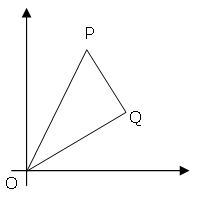
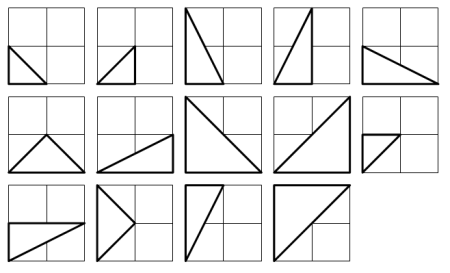

The points P (x1, y1) and Q (x2, y2) are plotted at integer co-ordinates and are joined to the origin, O(0,0), to form ΔOPQ.

There are exactly fourteen triangles containing a right angle that can be formed when each co-ordinate lies between 0 and 2 inclusive; that is,
0  x1, y1, x2, y2
x1, y1, x2, y2  2.
2.

Given that 0  x1, y1, x2, y2
x1, y1, x2, y2  50, how many right triangles can be formed?
50, how many right triangles can be formed?